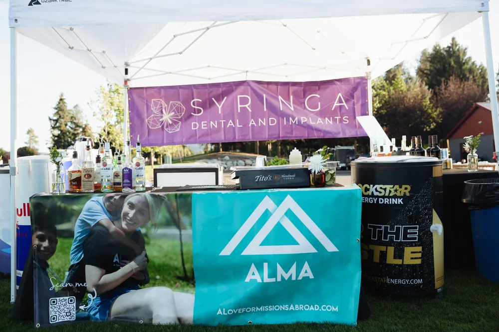
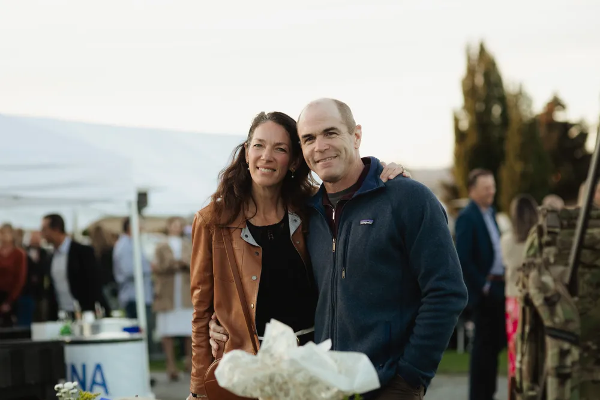

Donar
Tu donación se convierte en la cirugía de alguien.
Sin personal pagado en EE. UU. y con gastos mínimos. Casi cada dólar va directo a la atención en Guatemala.
A dónde va tu donación
Elige una necesidad
Cada donación se procesa de forma segura en Givebutter. ALMA es una organización sin fines de lucro 501(c)(3), EIN 83-2378971, así que tu donación es deducible de impuestos.
Donación de cuota de misión
Aporta a las cuotas de misión, donaciones deducibles que hacen posible cada semana de misión.
DonarPatrocinio de misión
Financia cirugías, insumos y tiempo de quirófano para una semana de misión.
DonarPatrocinio de voluntarios
Ayuda a una enfermera, técnico o intérprete a cubrir su cuota para que pueda servir.
DonarPrograma de cataratas
Devuelve la vista a un paciente. Después de la cirugía, nuestra trabajadora social te envía un informe y una foto.
DonarPrograma dental
Exámenes y atención dental para niños en comunidades donde es difícil llegar a un dentista.
DonarFormación Continua
Capacitación que fortalece a médicos, enfermeras y personal guatemaltecos.
DonarPersonal de ALMA en Guatemala
Mantiene a los coordinadores locales, la logística y el seguimiento durante todo el año.
DonarÚtiles escolares y juegos infantiles para la Escuela Vuelta Grande
Útiles escolares y un área de juegos para los niños de la Escuela Vuelta Grande.
DonarEl viaje de una donación
De tus manos a las suyas
-
 La espera
La espera Un paciente espera su cirugía
En el altiplano, a muchas familias les dicen que esperen. Las clínicas a menudo no tienen los cirujanos, medicamentos ni instrumentos para ayudar.
-
 El equipo
El equipo Los voluntarios responden
Tu donación ayuda a que enfermeras, proveedores de anestesia y cirujanos se unan a los equipos guatemaltecos en cada misión, y patrocina a voluntarios que de otro modo no podrían venir.
-
 El quirófano
El quirófano Cirujanos trabajan lado a lado
Cirujanos estadounidenses y guatemaltecos operan juntos en el Centro Médico Renacer, con insumos y medicamentos que tu donación provee.
-
 La recuperación
La recuperación Las enfermeras acompañan a cada paciente
Enfermeras de recuperación y personal guatemalteco revisan a cada paciente, y el seguimiento local continúa cuando el equipo regresa a casa.
-
 El regreso a casa
El regreso a casa Una familia recupera a su ser querido
Una abuela que camina sin dolor. Un padre que puede volver a trabajar. Un niño que puede usar sus manos. Eso hace tu donación.
Dona ahora
Una donación, donde más se necesita
Cada donación se procesa de forma segura en Givebutter. ALMA es una organización sin fines de lucro 501(c)(3), EIN 83-2378971, así que tu donación es deducible de impuestos en EE. UU.
Lo que puede hacer una donación
$100 ayuda a cubrir la anestesia de una cirugía.
Dona ahora en GivebutterLos montos son ejemplos de lo que una donación puede cubrir; ALMA puede confirmar los costos actuales.
Baila por Guatemala
Bachata for ALMA recaudó $36,243
Nuestro evento de 2026 superó por mucho su meta de $25,000. Gracias, Coeur d'Alene. Espera el próximo evento.



